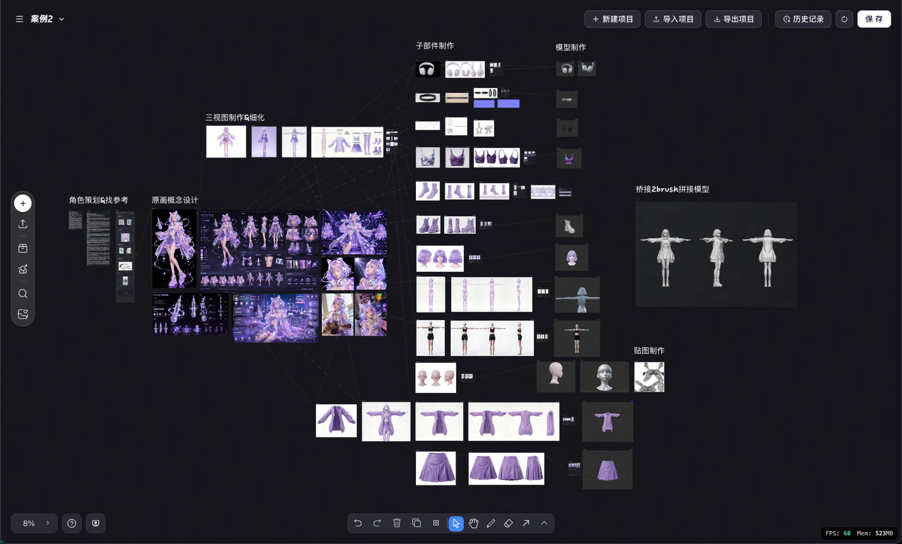
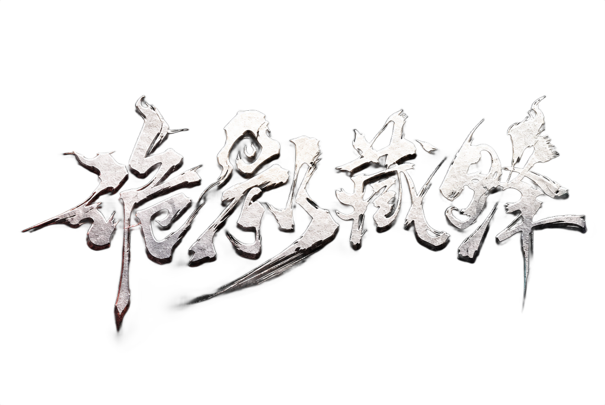

全美术流程覆盖，从需求到进包，一张画布全部涵盖

打破不可能三角
包含大部分丹青约平台生成能力，AI 辅助创作无缝融入生产管线
与项目内主流 DCC 实现双向桥接，一键导入，告别格式转换割裂
实时分享、版本管理、工单打通，让美术协作像代码协作一样流畅
曲速引擎在逆水寒的角色管线中大幅提升了美术迭代效率，AI 生成与 DCC 桥接的无缝衔接让我们的角色团队从重复劳动中解放出来。
从需求到进包，曲速真正实现了'一张画布'的承诺。无限大项目中，跨 DCC 的双向桥接消除了格式转换带来的大量无意义损耗。

实时分享和版本管理让团队协作效率飞跃。以前一个资产修改要等半天反馈，现在画布上实时同步，沟通成本几乎为零。

曲速引擎的 AI 能力深度融合了丹青约的生成优势，配合工单系统打通，真正做到了让美术回归美术本身。